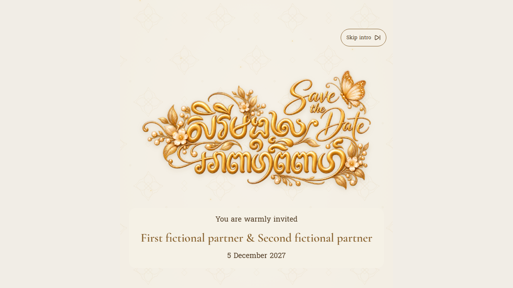
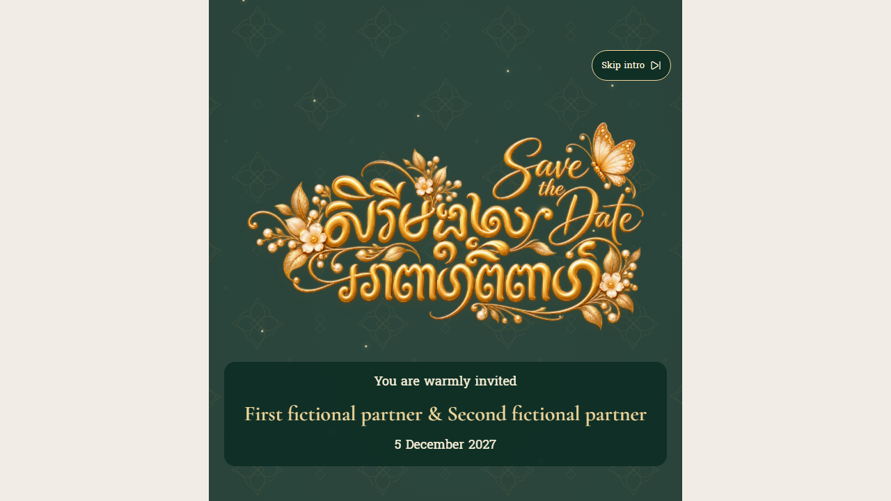
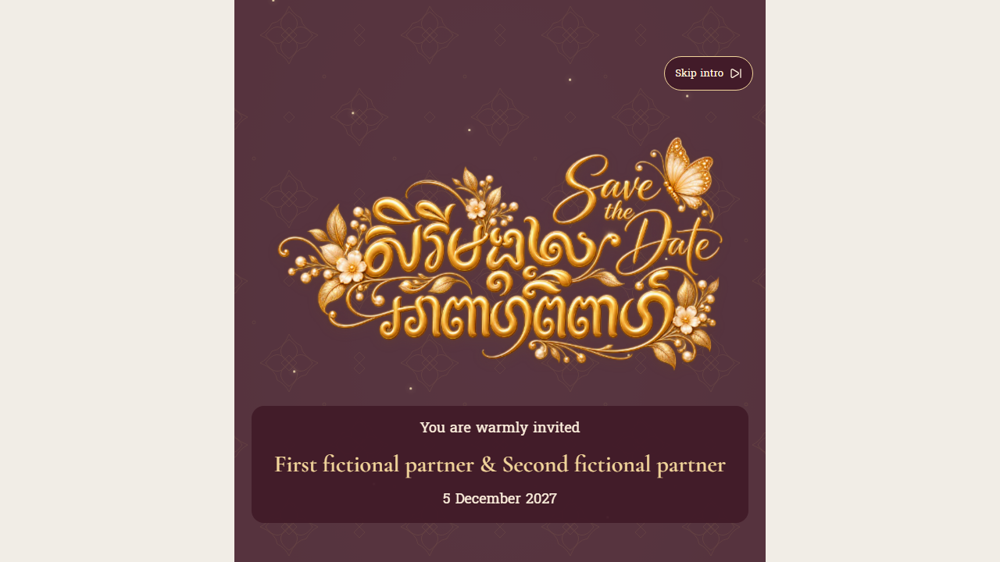
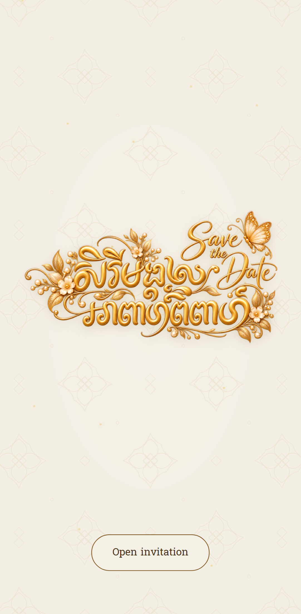
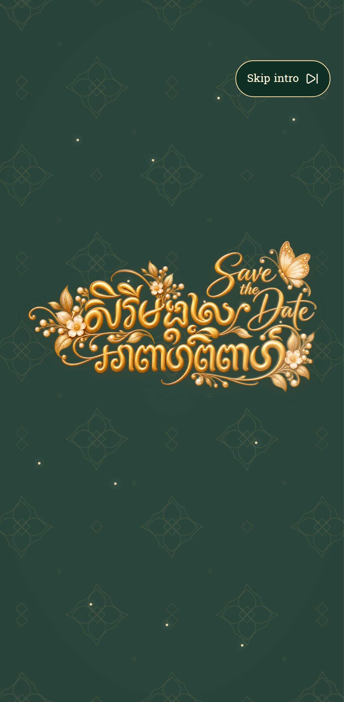
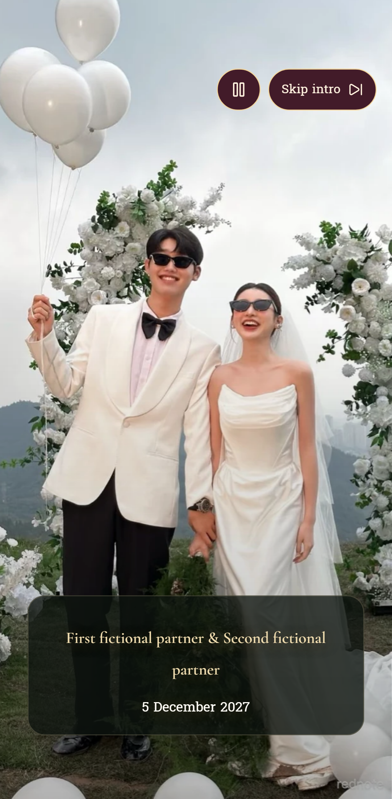
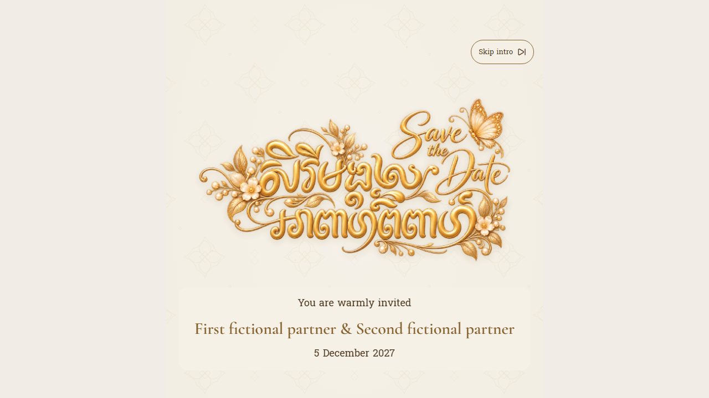
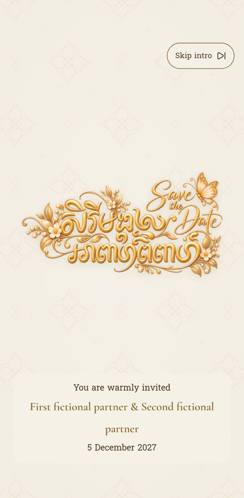
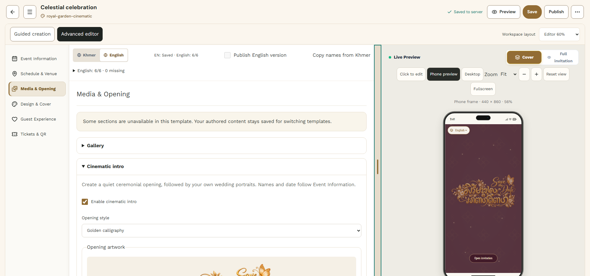
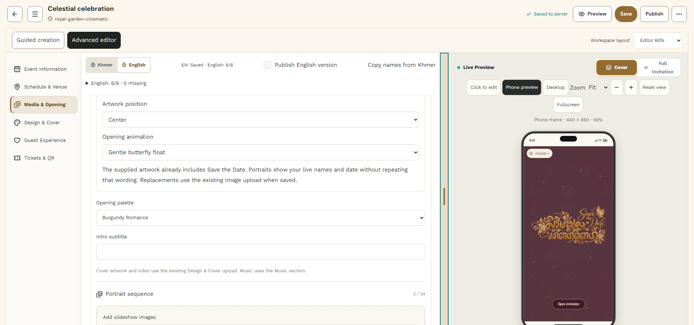

Royal Garden · Golden Calligraphy
Review the transparent artwork, editable text and portrait handoff. These are production-build browser captures with fictional event data. CSS animation poses are sampled deterministically; scene timers and assertions run separately. The invitation retains its intentional narrow canvas on desktop.
Engineering report · Actual QA results and limits
Controlled comparison
Same synthetic invitation and viewport: legacy oval and golden opening. Golden also demonstrates an owner-selected cover image behind the foreground artwork.
Three opening palettes

Ivory Royal
Emerald Gold
Burgundy RomanceMobile opening and handoff

Cover
Lettering reveal
Portrait handoffNatural title reveal
These two captures use the real animation clock, with no screenshot style overrides.

Desktop
MobileStudio

Opening selection and live preview.
Artwork controls use the existing editor/save infrastructure.The evidence directory includes all three palettes at cover, lettering, names and portrait poses for desktop and mobile Chromium. Firefox and WebKit are tested by assertions; their screenshots are not represented as manual device testing.